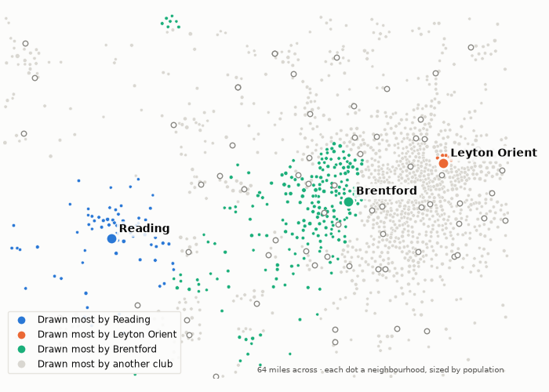

Whose people this week's clubs are playing for. 21 October 2026.
373,000 people live nearer to Reading's ground than to any other. Reading draw 55% of them; Leyton Orient draw 0%. The next biggest draws are Brentford (4%), Fulham (3%) and Chelsea (3%).
278,000 people live nearer to Leyton Orient's ground than to any other. Leyton Orient draw 25% of them; Reading draw 0%. The next biggest draws are Tottenham Hotspur (23%), West Ham United (20%) and Arsenal (14%).
They meet on Wednesday. On the map, each neighbourhood takes the colour of the club that draws most of it.

Modelled, not counted. A club's doorstep is the neighbourhoods nearer its ground than any other; every neighbourhood's people are split across all clubs by distance and division, as the divisions stand today. How catchment is measured.
Built from the English football database, tiers 1–5 from 1958/59. Results from football-data.co.uk. Archived copy.